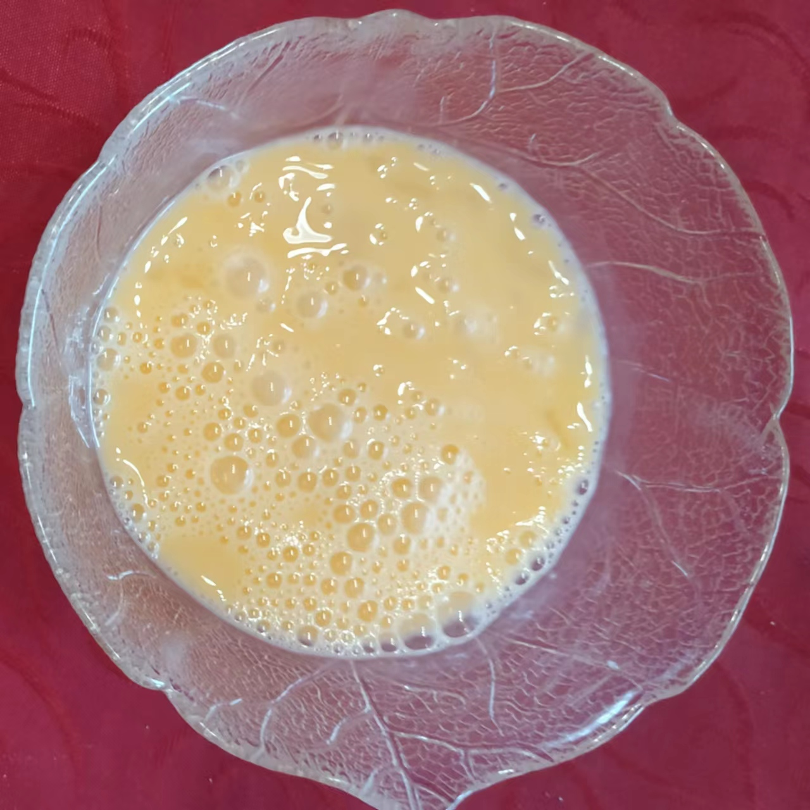

STANISLAV NOODLES
A recipe of stanislav noodles
Ingredients
- Chicken breast
- Rice noodles
- broccoli
- Ground pepper
- Soy sauce
- Oyster sauce
- Eggs
Preparations
1. Cut a chicken breast into stripes
2. Soak rice noodles in hot water for 20 minutes
3. Cut broccoli into bite size pieces
4. Mix some soy sauce and oyster sauce in a bowl
5. Crack 2 eggs into a bowl and whisk

Process
Step 1: Coat a big frying pan with oil of choice (preferably peanut oil)
Step 2: Turn on medium-hight heat, then throw in chicken pieces
Stir fry chicken with ground pepper of choice
Step 3: Thorw in broccoli and continue stir frying
Step 4: Pour in prepared sauce and continue stir frying
Step 5: Turn off heat when sauce is caramelized
Step 6: Put chicken and broccoli aside

Step 7: Coat pan with oil and turn medium-high heat again
Step 8: Pour in whisked eggs and wait 3-5 seconds
Then pour in drained rice noodles and stir fry
Step 9: Pour in the rest and continue stir frying
Final step: Serve